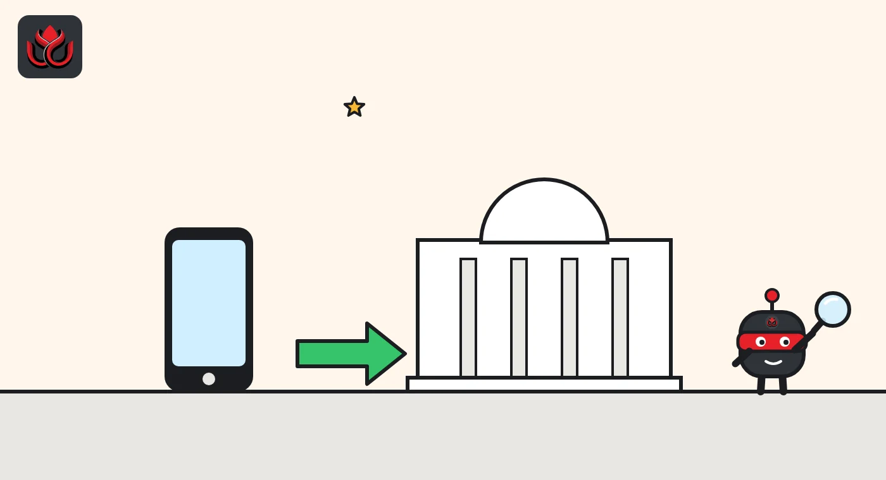
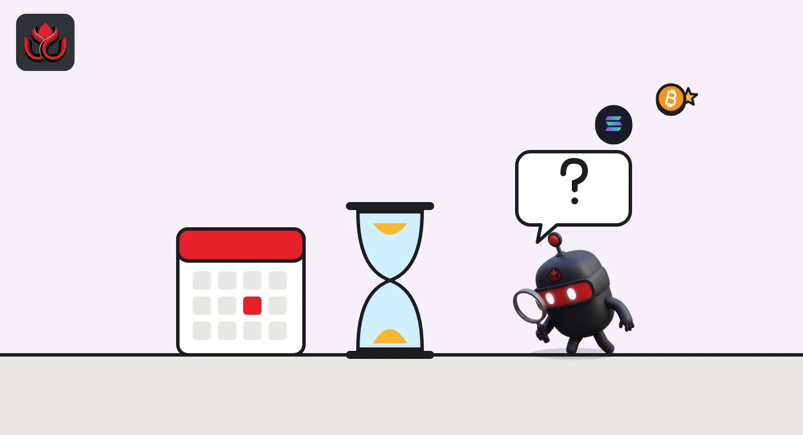

Circle and ACI want banks to settle in USDC on rails they already run. First: Colombia
ACI Worldwide, which built the core of Colombia's Bre-B instant payment system, will plug Circle's USDC into its payments platform for a Colombian pilot. The two companies gave no volumes, no bank names and no launch date.
Key points
- On October 27, 2026, ACI Worldwide and Circle said they will add USDC settlement to ACI Connetic, ACI's cloud payments platform used by banks.
- The work starts in Colombia, where ACI built the central infrastructure for Bre-B, the country's instant payments system.
- USDC had a market value of $70.68 billion on November 2, 2026, down 3.34% in 30 days, according to rwa.xyz.
What was announced
ACI Worldwide, a Nasdaq-listed payments software company, and Circle, the NYSE-listed issuer of the USDC stablecoin, announced a collaboration on October 27, 2026. A stablecoin is a crypto token designed to hold a steady value, here one US dollar.
The plan is to show that banks and payment firms can settle in USDC using the systems they already run. The tool is ACI Connetic, a cloud-native platform that handles account-to-account transfers, card payments and digital assets in one place. Circle supplies the USDC side.
The release says the work will initially focus on Colombia, and Circle's page summary calls it a Colombian pilot. The release gives no transaction volumes, no participating banks, no fees and no dates beyond the announcement.
Why the pilot starts in Colombia
ACI built the central infrastructure for Bre-B, Colombia's interoperable instant payments system, according to the release. That makes Colombia a natural test: ACI already sits in the middle of how money moves between Colombian banks, so adding a USDC option does not require a new network.
Craig Ramsey, ACI's global head of account-to-account payments, said the debate is "moving from possibility to practicality." Circle's chief commercial officer Kash Razzaghi framed it as a practical path for institutions to see how USDC fits their current setup.
ACI Connetic already handles account-to-account payments, card payments and digital assets on one platform, according to the release, so a bank that uses it would switch on USDC as another payment type rather than connect to a new system. ACI points to more than 50 years in payments as its pitch to cautious institutions.

Where USDC stands
USDC is the second-largest stablecoin. On November 2, 2026, rwa.xyz data showed a market value of $70.68 billion, down 3.34% from 30 days earlier, with 52.5 million holders, up 3.49%. Monthly transfer volume was $4.44 trillion, down 7.29%.
Most USDC sits on Ethereum. The chart shows the five largest networks by token supply. Circle says on its transparency page that USDC reserves are mostly held in the Circle Reserve Fund (USDXX), a government money market fund, with the rest in cash at large banks. Holdings are disclosed weekly, with monthly third-party assurance from a Big Four accounting firm.
Activity has cooled along with supply. Monthly active USDC addresses fell 7.84% to 16.8 million over the same 30 days, per rwa.xyz, even as the number of holders grew. More people hold USDC, but fewer of them moved it in October.
USDC supply by network, November 2, 2026
billion USDC
Source: rwa.xyz, USDC asset page, token supply by network.
What a bank actually gets
For a bank, the pitch is about settlement, the step where money finally moves between institutions. Bre-B already moves pesos between Colombian institutions instantly. A USDC leg would add a dollar token that moves on a public blockchain, which in principle runs at any hour, not only when banks are open.
The release does not say whether the pilot covers cross-border flows, domestic flows or both, which blockchains will be used, or how pesos convert to and from USDC. Those details decide whether this is a real product or a demonstration.

What comes next for Circle
Circle will report third-quarter results on November 4, 2026, it said. In October, Circle also announced a deal with Tereina, an SAP-backed company, to bring USDC and EURC into enterprise workflows. In Europe, USDC was recently named a significant stablecoin under MiCA, as LC Insight reported.
LC Insight analysis
This section is our reading of the facts above, not a statement of fact.
- We think the choice of partner is the story. Circle does not need to convince each Colombian bank to build crypto plumbing if the company that runs the plumbing adds USDC as an option.
- Without volumes, banks or a date, this is still a pilot announcement. The likely first proof point is a named bank settling real payments, not a demo.
- USDC supply fell 3.34% over the past month. Distribution deals like this one are how Circle tries to grow usage that does not depend on crypto trading.
What's next
- Names of the first Colombian banks or payment firms in the pilot
- Whether the pilot covers cross-border dollar payments
- Circle's third-quarter results on November 4, 2026
Disclaimer. This article is based on public information and the sources listed below as of the update time shown. It is for information only and is not investment, legal or tax advice. Figures may change as companies and authorities publish new data.
Sources
- Circle, ACI Worldwide and Circle collaborate to bring USDC settlement to existing payments infrastructure in Latin America (October 27, 2026)
- rwa.xyz, USDC asset page (November 2, 2026)
- Circle, Transparency and reserves
- Circle, Q3 2026 results date (October 7, 2026)
- Circle, Tereina and Circle bring USDC and EURC into enterprise workflows (October 7, 2026)